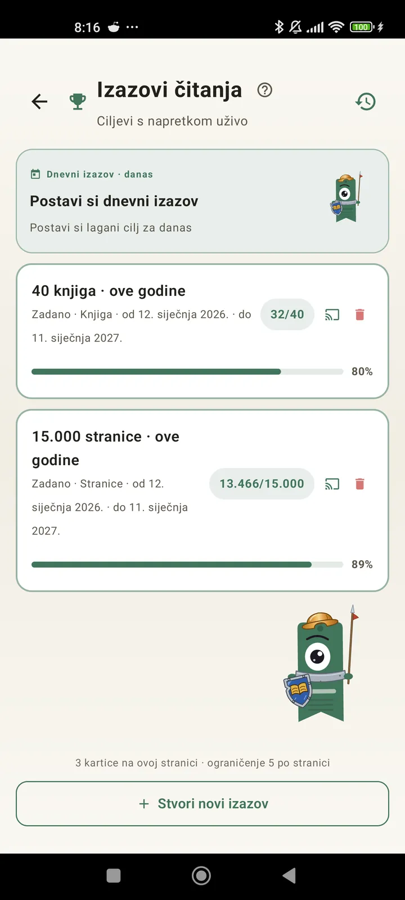

Upoznaj se kao čitatelj
Izazovi, bingo, widgeti i još značajki da izvučeš najviše iz čitanja. Novo u 3.7: widgeti za izazove i bingo.

Izazovi čitanja
Postavi ciljeve po stranicama, nizovima ili žanrovima. Do 15 aktivnih izazova besplatno, neograničeno s Pro. Plus prilagodljivi dnevni izazov koji se ne broji u ograničenje.

Dnevni izazov
Svaki dan novi cilj. Završi izazov prije ponoći da ti niz ne pukne.

Bingo čitanja
Svaki mjesec dva nova binga s tematskim poljima. Popuni retke, stupce ili cijelu karticu.

Tjedni sažetak
Svakog ponedjeljka pregled tvog tjedna: pročitane stranice, ukupno vrijeme, niz i usporedba s prošlim tjednom.

Mjesečni pregled
Kad mjesec završi, Lecturameter ga sažme: stranice, vrijeme, završene knjige, tvoj tempo iz dana u dan i tvoja knjiga mjeseca.

Widget za bingo Pro
Ovomjesečna bingo kartica, uvijek pred očima, s poljima koja si popunio i linijama koje si složio.

Widget s knjigom Besplatno
Gledaj knjigu koju čitaš ravno s početnog zaslona: naslovnica, naslov, autor, stranice i postotak napretka, uvijek ažurno. Možeš mu mijenjati veličinu da stane gdje god želiš.
Ozbiljno, brate, ova aplikacija je kao terapija. S par stranica dnevno došao sam na nekih 20 stranica dnevno i sve sam boljiPovratna informacija korisnika, poslana e-poštom

Mjesečna usporedba Pro
Brz pogled na zadnjih nekoliko mjeseci bez otvaranja aplikacije. Stupci sa stranicama za svaki mjesec, a tekući je istaknut, pa odmah vidiš čitaš li ovaj mjesec bolje ili lošije nego prošli.

Widget za izazove Pro
Tvoji aktivni izazovi i njihov napredak na početnom zaslonu. Koje ćeš prikazati biraš na zaslonu Izazovi.